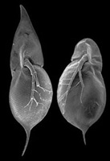
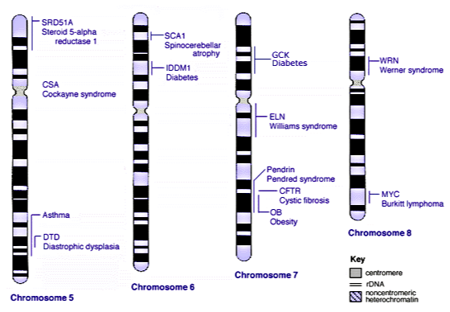

BIOL 210 Problem Set 6
Week 6, Sep 28-Oct 2
ps6.RmdYou can download an editable version of this Problem Set here.
General Instructions for Problem Sets
The goal of the problem sets is to give you practice thinking about and working with the concepts that we are covering. You should work solo to complete these assignments though you may want to do internet searches sometimes.
Before completing a problem set, you should review the content videos for the week and it may be helpful to complete those before the related class periods as well.
Use the link at the top of this webpage to turn in your completed assignment.
Problem Set Specifications
To earn an “S”:
- Completeness: Every question is thoroughly attempted.
- Accuracy: At least 80% of responses demonstrate correct logical reasoning, accurate quantitative calculations, and correct use of biological terms.
- Integrity & Sources: Citations are included where required, and work adheres to the Honor Code.
Related Readings
About Independent Assortment and Linkage
-
Wong, AHC, II Gottesman, and A Petronis. 2005. Phenotypic differences in genetically identical organisms: the epigenetic perspective. Human Molecular Genetics 14:R11-R18.
In this review article, the authors describe the role they see for epigenetics in explaining a number of “paradoxes” identified in studies attempting to understand the source of phenotypic variation among individuals with identical genotypes.
-
Feinberg, AP. 2007. Phenotypic plasticity and the epigenetics of human disease. Nature 447:433-440.
This review article describes disease as emergent from interactions among the epigenome, the genome, and the environment. The author argues that disease states arise due to an inability of cells to respond to their environments (i.e., disruptions in gene regulation).
Questions
- Consider the four-o’clock plant (Mirabilis jalapa), in which
there are two alleles for flower color, R (homozygotes have red
flowers) and W (homozygotes have white flowers). A homozygous
plant is also called “true-breeding” because all of its gametes will
inherit the same allele. And if you cross two true-breeding red-flowered
plants, then you know the offspring will “breed true”; the offspring
will all have red flowers like their parents. If you cross a
true-breeding red-flowered plant with a true-breeding white-flowered
plant, the offspring have pink flowers.
- Write out the genotypes of the two true-breeding parents and of the offspring if you cross them. Which are homozygous? Heterozygous?
- What is the name for the pattern of inheritance of the phenotypes encoded by the R and W alleles?
- Note that the heterozygote has pink flowers instead of red or white. What do you think is the underlying cause of this intermediate phenotype?
- Do you make any connections between this example and topics we learned earlier in the course?
- As discussed in the content video on Independent Assortment,
phenotypic plasticity is the phenomenon in which a single genotype can
produce different phenotypes, depending on external conditions. For
example, water fleas (Daphnia spp., pictured) are zooplankton,
microscopic aquatic animals commonly found in ponds and lakes where they
eat algae and are eaten by juvenile fish. If a female Daphnia
lives in a pond also inhabited by fish, she will produce clonal babies
(by parthenogenesis) that grow head and tail spikes (on the left in
image). But if that same mom (genetically identical) lives in a pond
without fish, she will have clonal babies with rounded heads and short
tails (on the right in image).

- How do you think Daphnia moms are able to change the way in which their babies develop to either have or lack head and tail spikes? (Think about how this relates to previous topics.)
- Throughout the course, we’ve actually seen quite a few examples of phenotypic plasticity, though I didn’t give them that name at the time. Find at least 2 examples that we have used earlier in the course which also happen to be examples of phenotypic plasticity. See if you can find one of them in a unicellular organism!
- You are a plant breeder studying two phenotypes in the trout lily
plant: flower color and leaf pattern. Your studies lead you to
believe that the flower color phenotype is determined by a single gene
with two alleles (yellow, A, and white, a) and the leaf pattern
phenotype is also determined by a single gene with two alleles (spotted,
B, and plain, b). You have a true-breeding plant that has white flowers
and spotted leaves (aaBB). You do not know the genes that are
responsible for these two phenotypes but have inferred the genotype of
your true-breeding plant with white flowers and spotted leaves.
- A fellow lily-breeder sends you a true-breeding plant that has yellow flowers and plain leaves. What is the genotype of this plant? (Hint: what does true-breeding mean?)
- You cross your white and spotted plant with the yellow and plain plant. If yellow is dominant to white and spotted is dominant to plain, what will be the genotype and phenotype of the offspring (the F1s)?
- Imagine you wanted to figure out whether the flower color and leaf pattern genes are linked. What cross would you need to carry out? What phenotypic ratio would you expect to observe in the cross if the genes are NOT physically linked? (Hint: You must use the plants you already have available, which does not include an aabb individual.)
- If the genes are very closely physically linked, would you ever be able to produce a true-breeding plant with yellow flowers and spotted leaves? Explain.
- Physical linkage between genes arises because a single chromosome
often contains a very long sequence of DNA that includes many genes. For
example, some human chromosomes contain more than 2000 genes while
others have only a few dozen. Below are models of a few human
chromosomes (in condensed form), noting along the length of the
chromosome where different genes are located for human autosomes 5
through 8. The dark bands on the chromosomes indicate areas that are
usually heterochromatin (highly condensed). The labeled genes are ones
where some alleles of that gene are known to cause disease. Use the
figure to answer the following questions.

- On chromosome 7, the OB gene encodes the hormone leptin, which helps regulate energy balance (wild-type allele B). The mutant b allele for this gene produces non-functional leptin molecules which increase risk of obesity in homozygotes (bb). Based on the figure, the OB (Obesity) gene is physically linked to which other genes?
- The CFTR gene on chromosome 7 encodes a protein that transports chloride and thiocyanate ions across the cell membrane (wild-type allele F). The mutant f allele for this gene is a deletion that causes protein-misfolding, leading to cystic fibrosis in homozygotes (ff) but no effect in heterozygotes (Ff). If a person was heterozygous for both the OB gene and the CFTR gene (BbFf), and the genes were NOT linked, what would be the chance that this person’s child would inherit BOTH the b and f alleles from this parent?
- Because the OB and CFTR genes are linked, we need to think through
some additional information to figure out how this affects the chance of
an offspring inheriting mutant alleles for both genes. Consider 2
scenarios:
- Scenario 1: Jack’s parents have the genotypes BBff (mom) and bbFF (dad), giving Jack the genotype BbFf. If this is Jack’s genotype, and no crossing-over occurs between the genes, can Jack’s child inherit both the b and f alleles from Jack? Explain.
- Scenario 2: Alex’s parents have the genotypes bbff (mom) and BBFF (dad), giving Alex the BbFf genotype. If no crossing-over occurs between OB and CFTR, can Alex pass on both the b and f alleles to one child?
- Now consider the children of parents with the genotypes Bf/bF and
Bf/bF. Assuming that these genes are so tightly linked that
crossing-over does not occur between them,
- What’s the chance that their child has a high risk of obesity?
- What’s the chance that their child inherits a predisposition for cystic fibrosis?
- What’s the chance that their child is at high risk for both obesity and cystic fibrosis? How would your response change if the genes were NOT linked (calculate the probability)?
- Weekly Reflection. Consider this week’s material and reply to one or
more of the following prompts:
- What was confusing or interesting to you about this week’s material?
- Did you have any key insights while studying this material?
- Does anything from this week’s material particularly stick with you?
Remember to sign the Honor Code on your assignment.